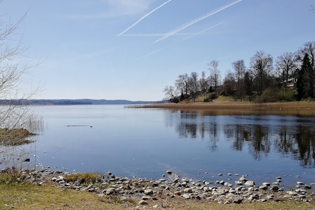

Om
Sjögården byggdes 1911 och användes till en början för att sköta hästar. Gården stod tom mellan 1990 och 2001, men har nu renoverats till restaurang och hotell.

Öppettider
- Vardagar
- Frukost kl 07:00 - 10:00
- Lunch kl 11:00 - 15:00
- Afternoon tea kl 16:00 - 18:00
- Lördag och söndag
- Frukost kl 07:00 - 11:00
- Lunch kl 11:30 - 15:00
- Afternoon tea kl 16:00 - 19:00
Kontakt
- telefon: 0322-00000
- e-post: info.sjogarden@example.com
Vägbeskrivning
- Adress: Adressvägen 8, 441 75 Sollebrunn
- Parkering är gratis. Det finns plats för upp till 25 bilar utanför gården.
- Närmsta hållplats är Looviken
Tillgänglighet
För frågor om tillgänglighet, skicka meddelande via kontaktformuläret, e-post, eller telefon.